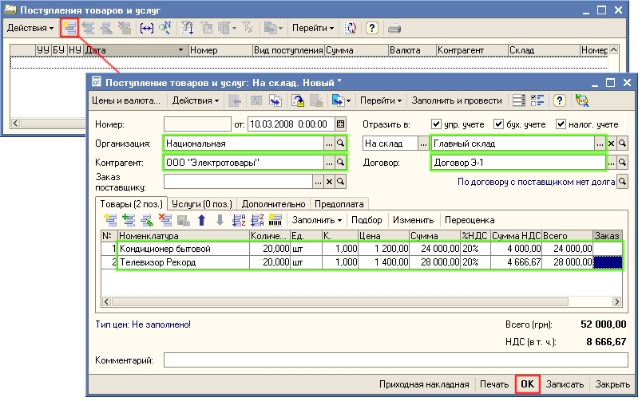
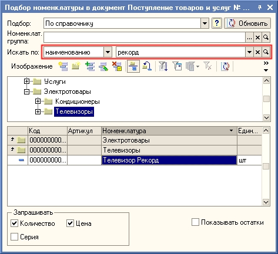
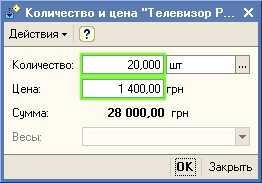
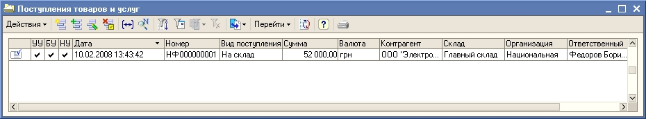
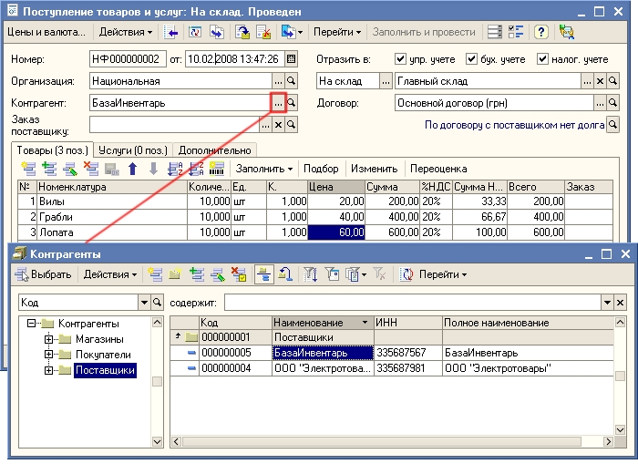

Поступление товаров от поставщика в отражается документом Поступление товаров и услуг. В этот документ вводятся данные из приходной накладной, полученной от поставщика.
1. Откройте список документов Поступление товаров и услуг (в новой информационной базе список не содержит документов). Для этого в меню Документы выберите пункт Закупка, а в нем — подпункт Поступление товаров и услуг.
2. Создайте новый документ Поступление товаров и услуг , комиссия нажатием кнопки  (или нажмите клавишу Insert или выберите меню Действия — Добавить). Заполните реквизиты документа значениями так, как показано на рисунке:
(или нажмите клавишу Insert или выберите меню Действия — Добавить). Заполните реквизиты документа значениями так, как показано на рисунке:

На закладке Дополнительно можно ввести входящий номер и дату документа, так как они указаны в печатной форме приходной накладной, полученной от поставщика. На закладке Товары укажите товары, выбирая их из списка номенклатуры. Введите вручную количество и цену товаров в соответствии с теми данными, которые указаны в печатной форме документа.
| СОВЕТ Для быстрого заполнения табличной части можно вызвать список номенклатуры в режиме подбора (кнопка Подбор над табличной частью документа). Дважды щелкая мышью по выбранным записям, можно перенести эти данные в табличную часть документа. |

Примечание.
При подборе товаров можно использовать быстрый поиск по части наименования (артикула, кода)товара - Искать по. Если в диалоговом окне подбора установить флаги Количество и Цена, то информацию о количестве и цене товара можно задавать непосредственно при подборе товаров в документ.

Важно.
Цены в документе задаются с учетом НДС. Если от поставщика поступил документ, в котором цены указаны без НДС, то перед вводом данных о ценах товаров, необходимо изменить порядок учета НДС в документе. Изменение порядка учета НДС производится в отдельном диалоговом окне, которое вызывается при нажатии на кнопку Цены и валюта в документе. Необходимо очистить флаг Сумма вкл.НДС
Закройте форму документа Поступление товаров и услуг. Для этого нажмите на кнопку Закрыть в нижней части формы документа. Документ зарегистрирован в информационной базе.

| СОВЕТ Выбор значения реквизита документа из справочника значительно упрощается, если Вы помните наименование элемента справочника (например, контрагента), или хотя бы начало наименования. Тогда достаточно начать вводить это наименование. Если же Вы не помните наименование элемента справочника, то необходимо воспользоваться кнопкой |
| ПРИМЕЧАНИЕ Выбор элемента справочника при заполнении документа возможен не только путем ввода наименования, но и с помощью ввода кода элемента. В некоторых справочниках возможен ввод и по другим значимым реквизитам. Так, например, контрагента можно выбрать не только вводом наименования или кода, но и его ИНН. |
Только что Вы научились оформлять в программе покупку товаров. Для закрепления Ваших знаний оформите самостоятельно документ поставки от поставщика База Инвентарь на товары из группы Инвентарь (Вилы, Грабли, Лопата) в количестве по 10 штук каждого, так как это показано на рисунке. Нового поставщика База инвентарь можно добавить непосредственно из документа. Для этого нажмите на кнопку  рядом с полем Контрагент, в открывшемся списке Контрагенты введите запись о новом контрагенте -поставщике, как это показано на рисунке и нажмите на кнопку Выбрать, чтобы внести информацию о поставщике в документ.
рядом с полем Контрагент, в открывшемся списке Контрагенты введите запись о новом контрагенте -поставщике, как это показано на рисунке и нажмите на кнопку Выбрать, чтобы внести информацию о поставщике в документ.

Теперь Вы научились оформлять поступление товаров. Из следующего раздела Вы узнаете как зарегистрировать новые отпускные цены на товары при изменении цен поставщика.
Следующий раздел: «Формирование новых цен продажи при изменении цен поставщика»